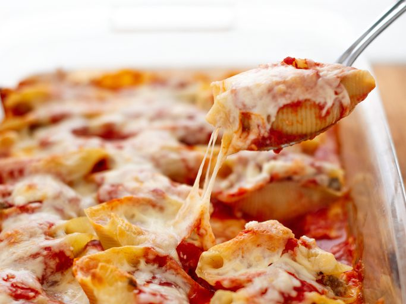

Beef and Mushroom Stuffed Shells

Description
Beef and mushroom stuffed shells that become everyone's favorite.
You can experiment using different varieties of mushrooms and adjusting the portion of meat to your preferences.
White, button or cremini mushrooms offer simple flavors that blends well with the meat and cheeses.
Consider pairing the stuffed shells with a rich merlot or cabernet sauvignon for a perfect dinner.
Ingredients
- 1/2 (16-ounce package) jumbo pasta shells
- 1/2 pound ground beef
- 8 ounces button mushrooms, minced
- 1 cup whole milk ricotta
- 1 large egg
- 2 cloves garlic, minced
- 2 teaspoons dried oregano
- salt and freshly ground black pepper to taste
- 15 ounces prepared tomato sauce
- 1 1/2 cups shredded mozzarella cheese
Steps
- Preheat the oven to 350 degrees F (175 degrees C).
- Bring a large pot of lightly salted water to a boil. Stir in shells and return to a boil. Cook pasta uncovered, stirring occasionally, until tender yet firm to the bite, about 10 minutes. Drain shells and set aside.
- Heat a large skillet over medium-high heat. Cook and stir ground beef in the hot skillet until browned and crumbly, 5 to 7 minutes. Add mushrooms; cook and stir until mushrooms have softened and released their liquid, about 5 minutes. Drain and discard excess fat. Transfer meat mixture to a separate bowl and allow to cool to room temperature, about 10 minutes.
- Stir ricotta cheese, egg, garlic, and oregano into cooled meat mixture until well combined. Season with salt and pepper.
- Add 1/2 of tomato sauce to the bottom of a 9x13 baking dish. Fill each shell with about 1 teaspoon meat mixture and place filling-side-up in the baking dish. Repeat with remaining shells and filling. Spread remaining tomato sauce over shells, and sprinkle with shredded mozzarella cheese.
- Bake in the preheated oven until cheese is melted and starting to brown, approximately 25 minutes. Serve immediately.